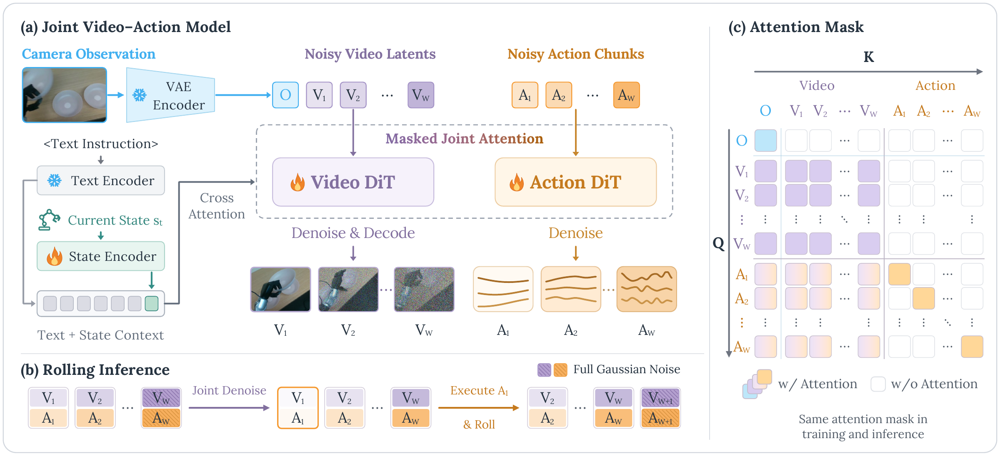

Refine Window Predictions
Jointly denoise predictions across the window until the next action chunk is ready.
World Action Models
with Rolling Imagination
World Action Models (WAMs) couple action generation with future visual prediction for robotic manipulation. However, completing the joint video-action denoising process at each replanning cycle incurs substantial latency, delaying action updates and limiting closed-loop responsiveness. We present Rolling-WAM, a formulation that distributes joint denoising across successive replanning cycles. Our method maintains a sliding window of video-action chunks at staggered noise levels. At each step, a rolling noise schedule fully denoises the imminent action chunk for execution, while partially refining farther-future chunks. As the window advances with new camera observations, the retained future chunks continue their denoising process. This distributes the computational cost over time while carrying an evolving visual-action context across chunk boundaries. Evaluations on LIBERO, RoboTwin, and a real-world Unitree G1 humanoid show that Rolling-WAM achieves competitive manipulation performance. By removing the need to denoise the entire prediction horizon from scratch, it delivers a 4.5× steady-state replanning speedup over standard joint WAMs.
faster replanningvs. Joint-WAM · steady state
LIBEROaverage success
RoboTwin 2.0average success
real-world G1average success
Rolling-WAM jointly refines video and action predictions in a sliding window. The next action becomes ready to execute while future chunks remain partially denoised.
Jointly denoise video and action predictions across the window.
Jointly denoise predictions across the window until the next action chunk is ready.
Execute the action chunk and acquire a new observation.
Retain the future predictions and append a new noisy chunk.

Our model uses a Mixture-of-Transformers (MoT) architecture, pairing a pretrained video Diffusion Transformer with a lightweight action Transformer. The video expert processes the current camera observation and noisy future video, while the action expert processes noisy robot actions. Language instructions and robot state condition both experts.
Masked joint attention lets future video tokens attend to the current observation and all predicted video chunks, but not to actions. Action tokens attend to all visual tokens, while action-to-action attention stays within each chunk. Per-chunk noise conditioning lets both experts refine the rolling window at different denoising stages, completing the next action chunk while future predictions remain partially noisy.
4.5× faster than Joint-WAM
Single NVIDIA A100 · Controlled RoboTwin 2.0 setup
visual encoding + denoising; warm-up and initialization excluded.No torch.compile, TensorRT, or custom CUDA kernels
@misc{zhou2026rollingwamworldactionmodels,
title = {{Rolling-WAM: World Action Models with Rolling Imagination}},
author = {Yinghua Zhou and Junjie Ye and Yiqi Zhao and Hao Dong
and Celina Shiyu Wang and Ruohai Ge and Tingyi Yang
and Basile Van Hoorick and Gaurav Sukhatme
and Vitor Guizilini and Yue Wang},
year = {2026},
eprint = {2609.30247},
archivePrefix = {arXiv},
primaryClass = {cs.RO},
url = {https://arxiv.org/abs/2609.30247}
}